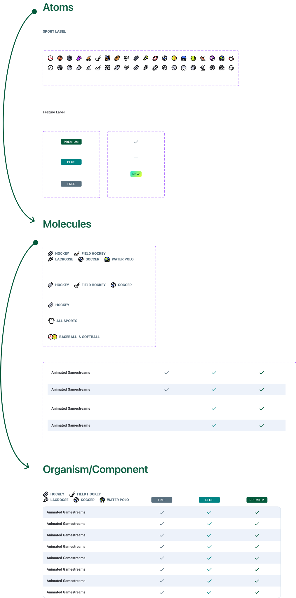
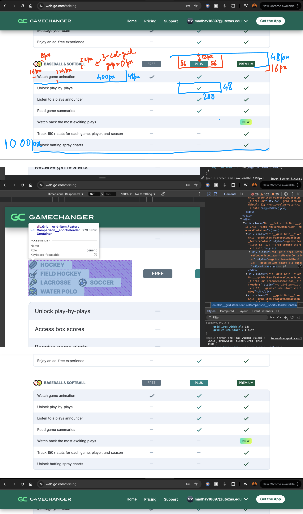

New York, United States (remote)
GameChanger provides mobile and web platforms that offer live scoring, stats, and streaming for youth and amateur sports teams, enabling players, coaches, and families to stay connected and engaged. For this project I worked with the team focused on furthering the success of the Volleyball offering at GC.
GameChanger had robust iOS and Android design systems, but the web design system lagged significantly behind. Developers often referenced mobile components for web adaptation, leading to design discrepancies and collaboration hurdles. This project aimed to close the gap by auditing and improving the web design system.
• Design Misalignment: Designers lacked updated components in Figma, leading to inconsistencies.
• Developer Workarounds: Developers manually adapted mobile components for web, increasing complexity and the risk of errors.
• Collaboration Hurdles: Inefficient communication between designers and developers caused delays and misinterpretations.
I led the audit and overhaul of the web design system, collaborating closely with a full-stack developer and my manager.
• Identified outdated components.
• Prioritized components based on usage and visibility.
• Compared web components to their iOS counterparts.
• Reverse-engineered components in Figma with 1:1 functionality replication.
• Designed missing or suboptimal components from scratch, ensuring 1:1 alignment with iOS design principles, adapting for web screens.
• Figma (for design), Notion (for documentation), and browser inspect panels (for functionality review).
•Worked with a developer to align designs, prepare detailed handoff files, and provide custom CSS notes.
• Redesigned 20+ components, improving consistency across 50+ screens and user journeys.
• Enhanced designer-developer collaboration and ensured cohesive user interface (UI) and user experience (UX).
• Elevated the priority of the web design system within the organization, transforming it into a reliable resource for teams.

• The Pricing Table is a key component designed to communicate GameChanger's subscription options for specific sports.
• It provides a clear comparison of the features offered across the Free, Plus, and Premium tiers, helping users make informed decisions.
• The table is organized with:
• Columns: Representing the selected sport and the three pricing tiers.
• Rows: Representing features, with checkmarks indicating availability per tier.
• Dynamic Sport Selection: The table header dynamically updates based on the sport selected, ensuring relevance to the user’s context.
• Responsive Design: The table adapts seamlessly to different screen sizes, stacking columns on smaller screens for better readability.
• Visual Indicators: Checkmarks indicate feature availability, with bolded or highlighted tiers drawing attention to the most popular choice.
• Interactivity: Users can hover over feature rows or tiers for tooltips providing additional details, helping them better understand what each tier offers.
• User Clarity: Simplifies complex pricing and feature sets, making it easier for users to compare options at a glance.
• Enhanced Decision-Making: The sport-specific context ensures users are only seeing pricing relevant to their needs.
• Conversion Boost: By highlighting popular or recommended tiers, the table nudges users toward higher-value subscriptions.

• The Schedule Table is a horizontally scrollable component that provides users with a comprehensive view of their game schedules and results.
• It organizes key details about each game, tailored for logged-in users.
• Horizontal Scrolling: Allows users to access all relevant game details without overwhelming the interface on smaller screens.
• Key Information Display: Includes fields like Live/Completed game status, Opponent, League, Score, Game Date, and Game Duration for quick and easy reference.
• Dynamic Updates: The table updates in real-time to reflect the latest game statuses and results, ensuring users always have up-to-date information.
• Responsive Design: The table adapts seamlessly across devices, preserving clarity and usability.
• Streamlined Access: Consolidates essential game information in one view, reducing navigation time for users.
• User Engagement: Keeps users informed about their team's performance, encouraging continued interaction with the platform.
• Cross-Platform Consistency: Aligns with GameChanger's mobile design principles, ensuring a seamless experience for users switching between platforms.
To ensure consistency across platforms, I started at the atomic level, aligning each smallest element with the iOS and Android design systems. Leveraging my expertise in CSS, HTML, and JavaScript, I reverse-engineered and adapted these elements for the web, systematically combining them into molecules and larger components to create a cohesive design system.
I even helped write the CSS for these!
• Redesigned 20+ components, improving consistency across 50+ screens and user journeys.
• Increased efficiency in designer-developer collaboration, reducing handoff times by 40%.
• Elevated the web design system into a key resource for cross-functional teams.
• Fostered a culture of design and development alignment, improving product quality and speed.
• Mastered auditing and revitalizing an existing design system.
• Gained deeper experience collaborating with developers beyond feature-specific work.
Further simplify Figma component variants for efficiency.
If you are interested in discussing this case study further You can contact me at
madhav18897@utexas.edu
@all rights reserved